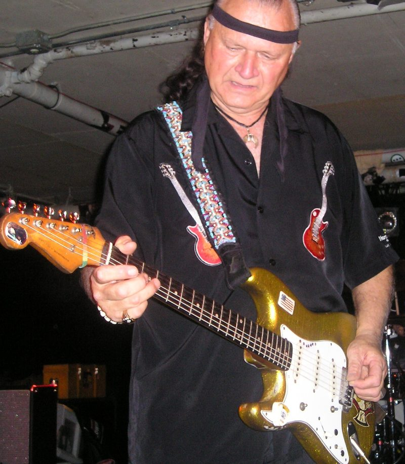

Dick Dale was the guitarist who made surfing sound like something.
Born Richard Anthony Monsour in Boston in 1937, he cut "Let's Go Trippin'" in 1961, often called the first surf rock instrumental.
His 1962 "Miserlou" became the anthem of the whole genre.

Table of Contents
- From Boston to El Segundo
- The Rendezvous Ballroom and Let's Go Trippin'
- Miserlou and Surfers' Choice
- The Fender Showman and the Upside-Down Guitar
- The Capitol Years
- Illness, Comeback and Legacy
- FAQ
Dick Dale's Early Years: From Boston to El Segundo
His father, James, was of Lebanese descent.
His mother, Sophia "Fern" Danksewicz, was of Polish-Belarusian descent.
The family lived in Quincy, Massachusetts, home to a large Lebanese community.
Music came at him from every side:
- piano at nine, after hearing an aunt play
- a ukulele, after Hank Williams caught his ear, with "Tennessee Waltz" the first song he learned
- the tarabaki drum and the oud, through an uncle
He bought his first guitar from a friend for $8.
The tarabaki's rapid beat became the fast alternate picking he called "the pulsation."
In 1954 his father, a machinist, took a job with Hughes Aircraft.
The family moved to El Segundo, California, and the boy learned to surf at 17.
Playing country and rockabilly bars, he met an entertainer called Texas Tiny.
Tiny thought "Dick Dale" sounded like a good country name, and it stuck.
The Rendezvous Ballroom and Let's Go Trippin'
When crowds outgrew an ice cream parlor gig, he needed a bigger room.
He found the Rendezvous Ballroom in Balboa, a 3,000-capacity hall on the beach.
The owners and the city of Newport Beach said yes on two conditions: no alcohol and a dress code.
His dances, called stomps, sold out week after week.
"Let's Go Trippin'" came out on his own Deltone label in September 1961.
It reached No. 4 on Los Angeles station KFWB and No. 60 on the Billboard Hot 100.
The 1961 year guide shows how new that sound was.
It is the record our garage and surf rock guide starts from.
Miserlou and Surfers' Choice
"Misirlou" is an Eastern Mediterranean folk song, first recorded in Greece in 1927.
Jan August had a hit with it in 1946.
Dick Dale's 1962 version, titled "Miserlou," drew on an Arabic folk version played on the oud.
He sped it up into a wall of tremolo picking.
"I changed the tempo, and just started cranking," he later said of the first night he played it.
Dick Dale and His Del-Tones released Surfers' Choice in November 1962.
It was mostly recorded live at the Rendezvous, with studio overdubs.
Capitol Records picked it up for national release, and it reached No. 59 on the album chart in 1963.
The 1962 year guide puts it beside the rest of that year.
The Fender Showman and the Upside-Down Guitar
Playing It Backwards
Dale was left-handed.
He played a right-handed guitar flipped over, without restringing it, so the low string sat at the bottom.
Blowing Up the Amps
He blew up one Fender amp after another.
Leo Fender and Freddie Tavares came to the Rendezvous to hear why.
They found he was playing louder than the screaming crowd.
Their fix became the Showman:
- a custom 15-inch JBL D130F speaker, built at their request
- a second 15-inch speaker later, for the Dual Showman
- volume no amp of the time could match, credited as the first 100-watt guitar amp
Fender reportedly said gear that could take Dick Dale's punishment was fit for anyone.
Heavy strings, that volume and spring reverb later earned him the name "Father of Heavy Metal."
The Capitol Years
Capitol released King of the Surf Guitar in 1963, named after his nickname.
On October 6, 1963, he played "Surfin' and A-Swingin'" on The Ed Sullivan Show.
In the film Beach Party that year, the Del-Tones played both sides of "Secret Surfin' Spot."
The 1963 year guide covers the surf boom at its peak.
Muscle Beach Party followed in 1964, with three Del-Tones songs.
Then the British Invasion took over the charts in 1964, and surf faded fast.
Press Play on any row below to hear Dick Dale's key singles from 1961 to 1964.
| Play | |||
|---|---|---|---|
| "Let's Go Trippin'" | 1961 | Hot 100 No. 60 | |
| "Jungle Fever" | 1962 | Did not chart | |
| "Miserlou" | 1962 | Did not chart | |
| "King of the Surf Guitar" | 1963 | Did not chart | |
| "Surfin' and A-Swingin'" | 1963 | Did not chart | |
| "The Scavenger" | 1963 | Hot 100 No. 98 | |
| "The Wedge" | 1963 | Did not chart | |
| "Mr. Eliminator" | 1964 | Did not chart |
Illness, Comeback and Legacy
Cancer and the Long Break
After the surf boom, Dale developed colorectal cancer.
In the liner notes of a later anthology, he recalled Jimi Hendrix saying, "Then you'll never hear surf music again."
Dale recovered, but stepped away from music for years.
In 1979 an infection from a swimming injury nearly cost him a leg.
The Comeback
He recorded again in 1986.
In the 1987 film Back to the Beach, he played "Pipeline" with Stevie Ray Vaughan, a track that earned a Grammy nomination.
Then Quentin Tarantino used "Miserlou" over the opening of Pulp Fiction in 1994, and a new generation found him.
Honors and Influence
- 1996: the Hollywood Rock Walk of Fame
- 2003: No. 31 on Rolling Stone's list of the 100 greatest guitarists
- 2009: the Musicians Hall of Fame in Nashville
The Beach Boys, Jan and Dean and the Trashmen all recorded his songs.
Hendrix, Pete Townshend, Eddie Van Halen and Brian May all drew on his style, per the Music Museum of New England.
He kept touring to the end, partly to pay his medical bills.
He died in Loma Linda, California, on March 16, 2019, aged 81, per The New York Times.
More of the decade's guitar bands are in our 60s rock guide.
FAQ
Who invented surf rock?
Dick Dale is credited with starting it.
His 1961 single "Let's Go Trippin'" is often called the first surf rock instrumental, and his dances at the Rendezvous Ballroom in Balboa launched the craze.
Which guitarist recorded Misirlou in 1962?
Dale recorded it with his Del-Tones in 1962, under the title "Miserlou."
It is an Eastern Mediterranean folk song, first recorded in 1927.
Why did he play the guitar upside down?
He was left-handed and learned on a right-handed guitar, flipped over and left strung the normal way.
He kept that reverse stringing even after he owned left-handed guitars.
What amp did he use?
He used the Fender Showman, developed with Leo Fender after Dale kept blowing up smaller amps.
A two-speaker version became the Dual Showman.
When did he die?
He died on March 16, 2019, in Loma Linda, California, at 81.
He had been treated for heart and kidney failure.
The full discography of Dick Dale is on Wikipedia.
Back to the 1960smusic.net homepage to explore every genre of the decade.